Slide 1FIRST ROBOTICS COMPETITION
Drive Bases &
Mechanisms
When to use them, how they work,
and what they're best at
DRIVE BASES
& MECHANISMS
Tank · WCD · Mecanum
Swerve · H-Drive
Intakes · Elevators
Arms · Shooters · Climbers
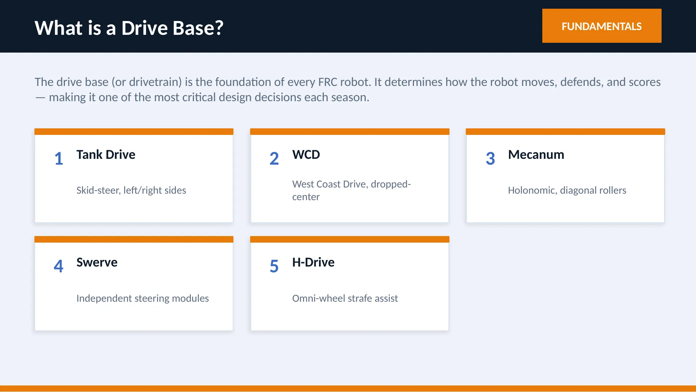
Slide 2What is a Drive Base?
FUNDAMENTALS
The drive base (or drivetrain) is the foundation of every FRC robot. It determines how the robot moves, defends, and scores — making it one of the most critical design decisions each season.
1
Tank Drive
Skid-steer, left/right sides
2
WCD
West Coast Drive, dropped-center
3
Mecanum
Holonomic, diagonal rollers
4
Swerve
Independent steering modules
5
H-Drive
Omni-wheel strafe assist
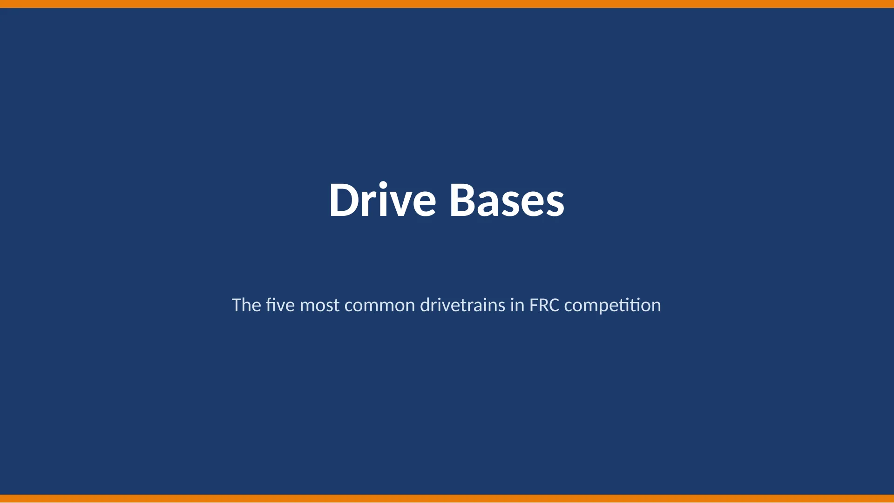
Slide 3Drive Bases
The five most common drivetrains in FRC competition
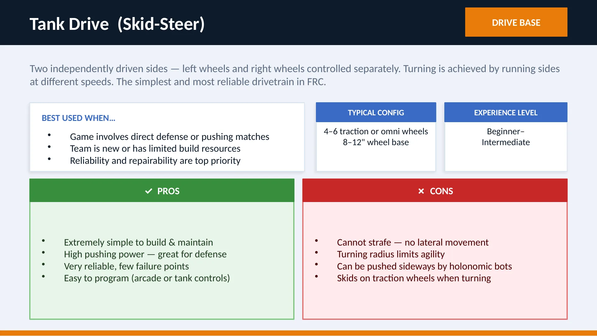
Slide 4Tank Drive (Skid-Steer)
DRIVE BASE
Two independently driven sides — left wheels and right wheels controlled separately. Turning is achieved by running sides at different speeds. The simplest and most reliable drivetrain in FRC.
BEST USED WHEN…
Game involves direct defense or pushing matches
Team is new or has limited build resources
Reliability and repairability are top priority
TYPICAL CONFIG
4–6 traction or omni wheels
8–12" wheel base
EXPERIENCE LEVEL
Beginner–
Intermediate
✓ PROS
Extremely simple to build & maintain
High pushing power — great for defense
Very reliable, few failure points
Easy to program (arcade or tank controls)
✗ CONS
Cannot strafe — no lateral movement
Turning radius limits agility
Can be pushed sideways by holonomic bots
Skids on traction wheels when turning
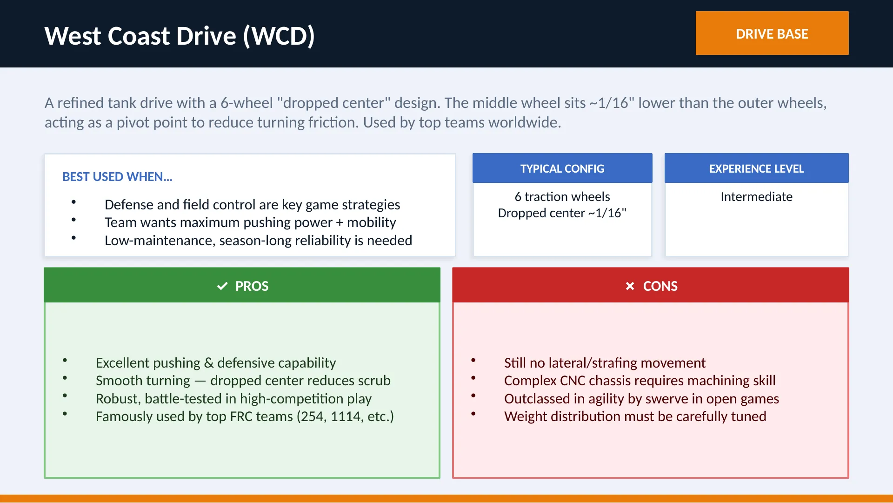
Slide 5West Coast Drive (WCD)
DRIVE BASE
A refined tank drive with a 6-wheel "dropped center" design. The middle wheel sits ~1/16" lower than the outer wheels, acting as a pivot point to reduce turning friction. Used by top teams worldwide.
BEST USED WHEN…
Defense and field control are key game strategies
Team wants maximum pushing power + mobility
Low-maintenance, season-long reliability is needed
TYPICAL CONFIG
6 traction wheels
Dropped center ~1/16"
EXPERIENCE LEVEL
Intermediate
✓ PROS
Excellent pushing & defensive capability
Smooth turning — dropped center reduces scrub
Robust, battle-tested in high-competition play
Famously used by top FRC teams (254, 1114, etc.)
✗ CONS
Still no lateral/strafing movement
Complex CNC chassis requires machining skill
Outclassed in agility by swerve in open games
Weight distribution must be carefully tuned
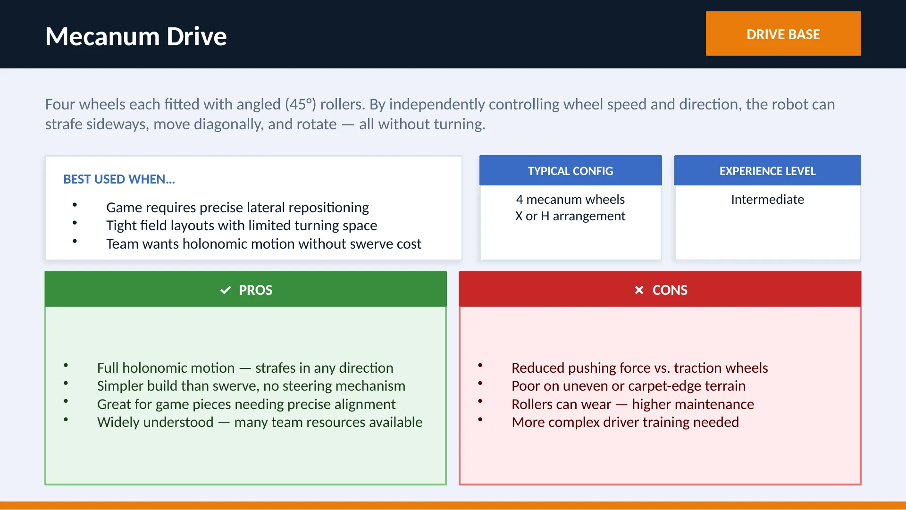
Slide 6Mecanum Drive
DRIVE BASE
Four wheels each fitted with angled (45°) rollers. By independently controlling wheel speed and direction, the robot can strafe sideways, move diagonally, and rotate — all without turning.
BEST USED WHEN…
Game requires precise lateral repositioning
Tight field layouts with limited turning space
Team wants holonomic motion without swerve cost
TYPICAL CONFIG
4 mecanum wheels
X or H arrangement
EXPERIENCE LEVEL
Intermediate
✓ PROS
Full holonomic motion — strafes in any direction
Simpler build than swerve, no steering mechanism
Great for game pieces needing precise alignment
Widely understood — many team resources available
✗ CONS
Reduced pushing force vs. traction wheels
Poor on uneven or carpet-edge terrain
Rollers can wear — higher maintenance
More complex driver training needed
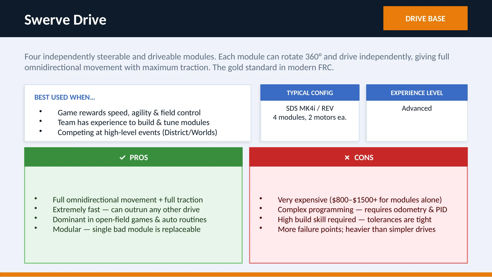
Slide 7Swerve Drive
DRIVE BASE
Four independently steerable and driveable modules. Each module can rotate 360° and drive independently, giving full omnidirectional movement with maximum traction. The gold standard in modern FRC.
BEST USED WHEN…
Game rewards speed, agility & field control
Team has experience to build & tune modules
Competing at high-level events (District/Worlds)
TYPICAL CONFIG
SDS MK4i / REV
4 modules, 2 motors ea.
EXPERIENCE LEVEL
Advanced
✓ PROS
Full omnidirectional movement + full traction
Extremely fast — can outrun any other drive
Dominant in open-field games & auto routines
Modular — single bad module is replaceable
✗ CONS
Very expensive ($800–$1500+ for modules alone)
Complex programming — requires odometry & PID
High build skill required — tolerances are tight
More failure points; heavier than simpler drives
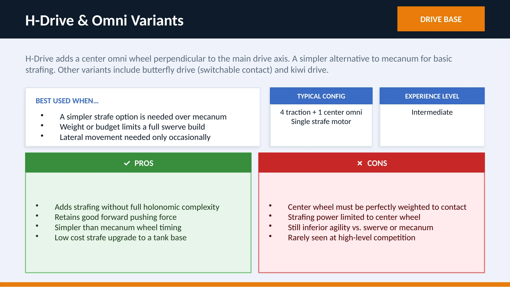
Slide 8H-Drive & Omni Variants
DRIVE BASE
H-Drive adds a center omni wheel perpendicular to the main drive axis. A simpler alternative to mecanum for basic strafing. Other variants include butterfly drive (switchable contact) and kiwi drive.
BEST USED WHEN…
A simpler strafe option is needed over mecanum
Weight or budget limits a full swerve build
Lateral movement needed only occasionally
TYPICAL CONFIG
4 traction + 1 center omni
Single strafe motor
EXPERIENCE LEVEL
Intermediate
✓ PROS
Adds strafing without full holonomic complexity
Retains good forward pushing force
Simpler than mecanum wheel timing
Low cost strafe upgrade to a tank base
✗ CONS
Center wheel must be perfectly weighted to contact
Strafing power limited to center wheel
Still inferior agility vs. swerve or mecanum
Rarely seen at high-level competition
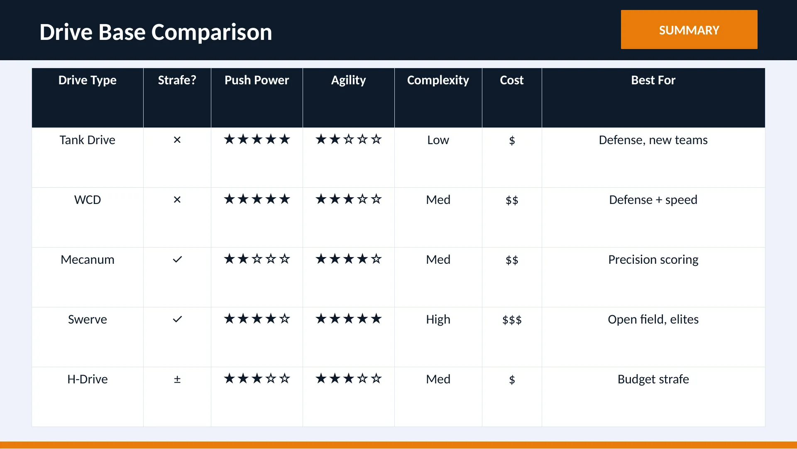
Slide 9Drive Base Comparison
SUMMARY
Drive Type
Strafe?
Push Power
Agility
Complexity
Cost
Best For
Tank Drive
✗
★★★★★
★★☆☆☆
Low
$
Defense, new teams
WCD
✗
★★★★★
★★★☆☆
Med
$$
Defense + speed
Mecanum
✓
★★☆☆☆
★★★★☆
Med
$$
Precision scoring
Swerve
✓
★★★★☆
★★★★★
High
$$$
Open field, elites
H-Drive
±
★★★☆☆
★★★☆☆
Med
$
Budget strafeSlide 10Common Mechanisms
Intakes · Elevators · Arms · Shooters · Climbers
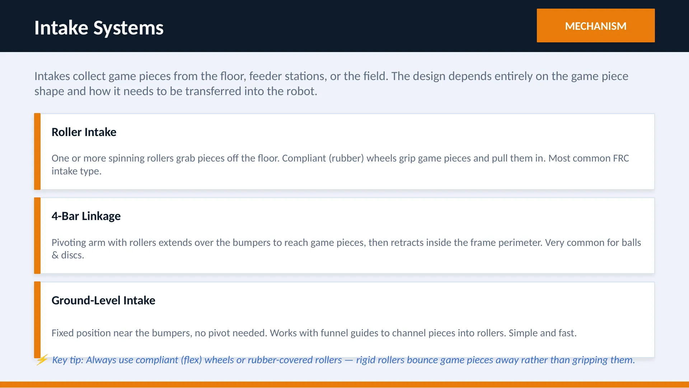
Slide 11Intake Systems
MECHANISM
Intakes collect game pieces from the floor, feeder stations, or the field. The design depends entirely on the game piece shape and how it needs to be transferred into the robot.
Roller Intake
One or more spinning rollers grab pieces off the floor. Compliant (rubber) wheels grip game pieces and pull them in. Most common FRC intake type.
4-Bar Linkage
Pivoting arm with rollers extends over the bumpers to reach game pieces, then retracts inside the frame perimeter. Very common for balls & discs.
Ground-Level Intake
Fixed position near the bumpers, no pivot needed. Works with funnel guides to channel pieces into rollers. Simple and fast.
⚡ Key tip: Always use compliant (flex) wheels or rubber-covered rollers — rigid rollers bounce game pieces away rather than gripping them.
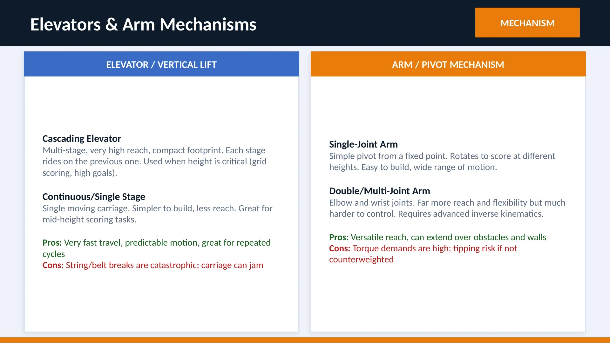
Slide 12Elevators & Arm Mechanisms
MECHANISM
ELEVATOR / VERTICAL LIFT
Cascading Elevator
Multi-stage, very high reach, compact footprint. Each stage rides on the previous one. Used when height is critical (grid scoring, high goals).
Continuous/Single Stage
Single moving carriage. Simpler to build, less reach. Great for mid-height scoring tasks.
Pros: Very fast travel, predictable motion, great for repeated cycles
Cons: String/belt breaks are catastrophic; carriage can jam
ARM / PIVOT MECHANISM
Single-Joint Arm
Simple pivot from a fixed point. Rotates to score at different heights. Easy to build, wide range of motion.
Double/Multi-Joint Arm
Elbow and wrist joints. Far more reach and flexibility but much harder to control. Requires advanced inverse kinematics.
Pros: Versatile reach, can extend over obstacles and walls
Cons: Torque demands are high; tipping risk if not counterweighted
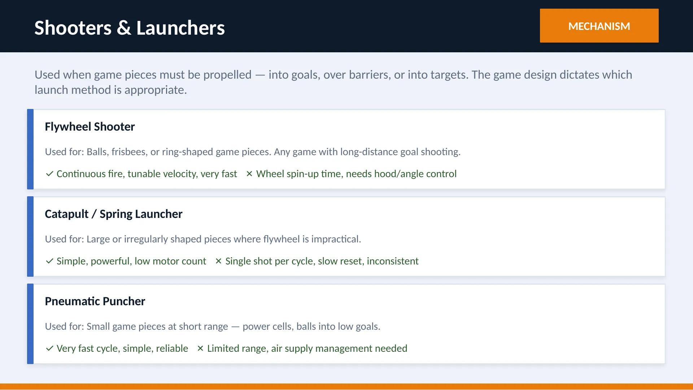
Slide 13Shooters & Launchers
MECHANISM
Used when game pieces must be propelled — into goals, over barriers, or into targets. The game design dictates which launch method is appropriate.
Flywheel Shooter
Used for: Balls, frisbees, or ring-shaped game pieces. Any game with long-distance goal shooting.
✓ Continuous fire, tunable velocity, very fast ✗ Wheel spin-up time, needs hood/angle control
Catapult / Spring Launcher
Used for: Large or irregularly shaped pieces where flywheel is impractical.
✓ Simple, powerful, low motor count ✗ Single shot per cycle, slow reset, inconsistent
Pneumatic Puncher
Used for: Small game pieces at short range — power cells, balls into low goals.
✓ Very fast cycle, simple, reliable ✗ Limited range, air supply management needed
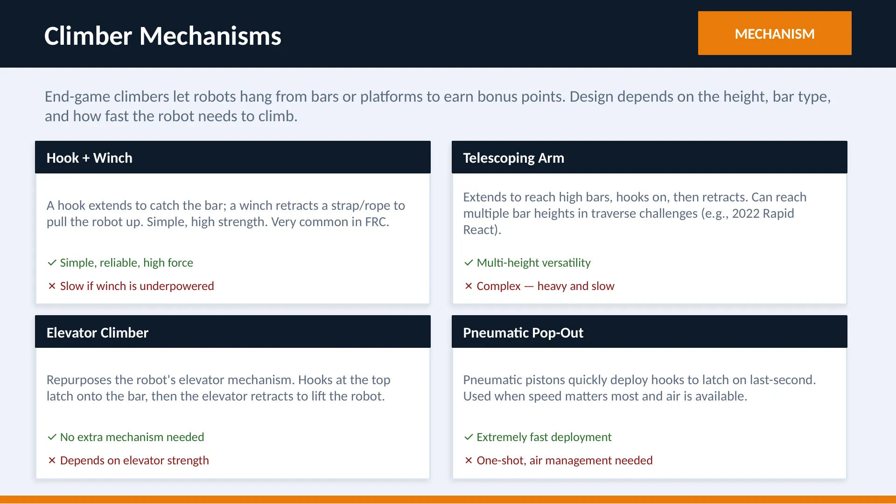
Slide 14Climber Mechanisms
MECHANISM
End-game climbers let robots hang from bars or platforms to earn bonus points. Design depends on the height, bar type, and how fast the robot needs to climb.
Hook + Winch
A hook extends to catch the bar; a winch retracts a strap/rope to pull the robot up. Simple, high strength. Very common in FRC.
✓ Simple, reliable, high force
✗ Slow if winch is underpowered
Elevator Climber
Repurposes the robot's elevator mechanism. Hooks at the top latch onto the bar, then the elevator retracts to lift the robot.
✓ No extra mechanism needed
✗ Depends on elevator strength
Telescoping Arm
Extends to reach high bars, hooks on, then retracts. Can reach multiple bar heights in traverse challenges (e.g., 2022 Rapid React).
✓ Multi-height versatility
✗ Complex — heavy and slow
Pneumatic Pop-Out
Pneumatic pistons quickly deploy hooks to latch on last-second. Used when speed matters most and air is available.
✓ Extremely fast deployment
✗ One-shot, air management needed
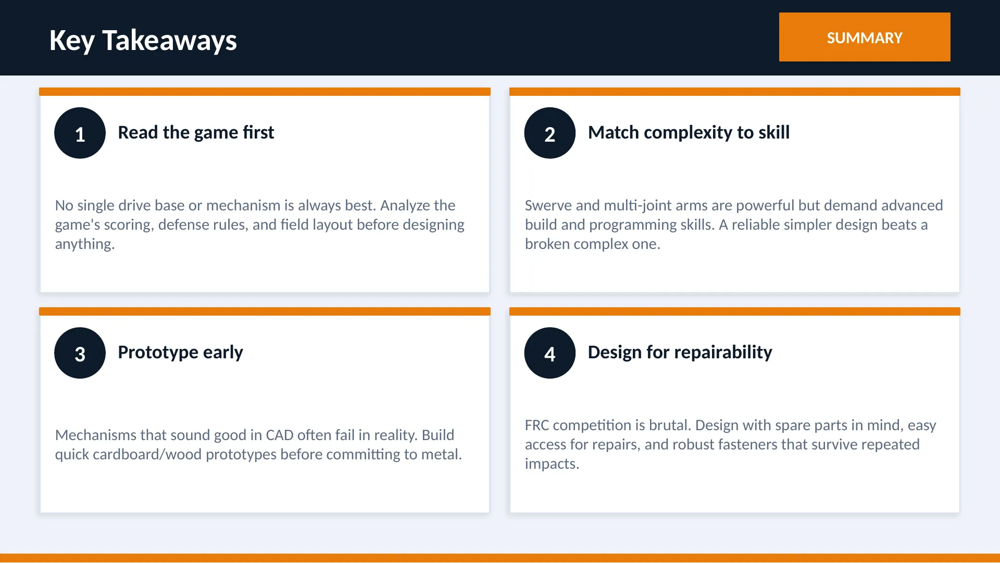
Slide 15Key Takeaways
SUMMARY
1
Read the game first
No single drive base or mechanism is always best. Analyze the game's scoring, defense rules, and field layout before designing anything.
2
Match complexity to skill
Swerve and multi-joint arms are powerful but demand advanced build and programming skills. A reliable simpler design beats a broken complex one.
3
Prototype early
Mechanisms that sound good in CAD often fail in reality. Build quick cardboard/wood prototypes before committing to metal.
4
Design for repairability
FRC competition is brutal. Design with spare parts in mind, easy access for repairs, and robust fasteners that survive repeated impacts.
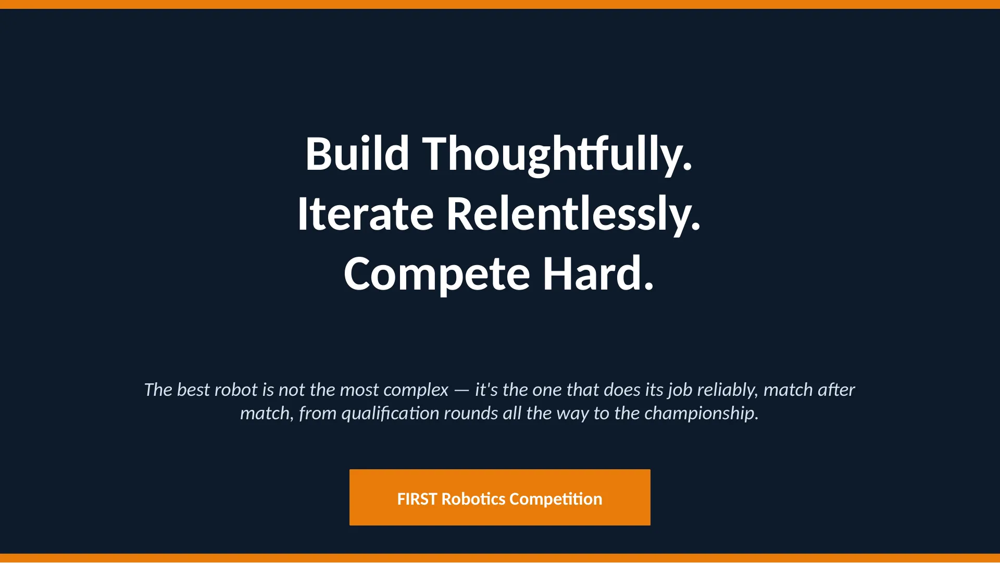
Slide 16Build Thoughtfully.
Iterate Relentlessly.
Compete Hard.
The best robot is not the most complex — it's the one that does its job reliably, match after match, from qualification rounds all the way to the championship.
FIRST Robotics Competition